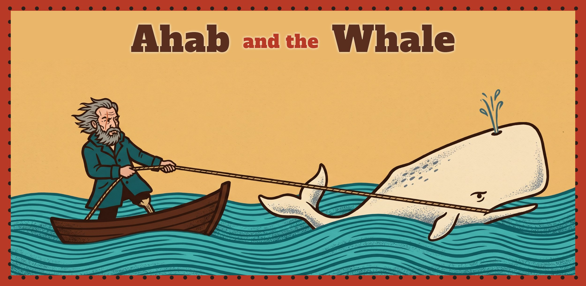
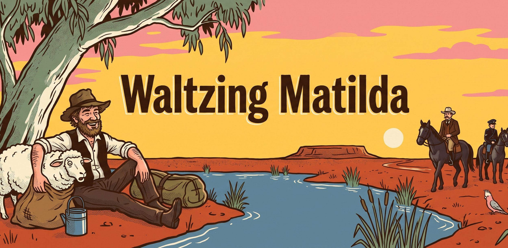
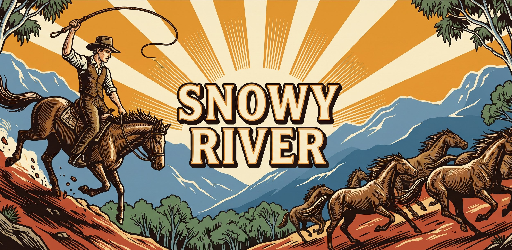
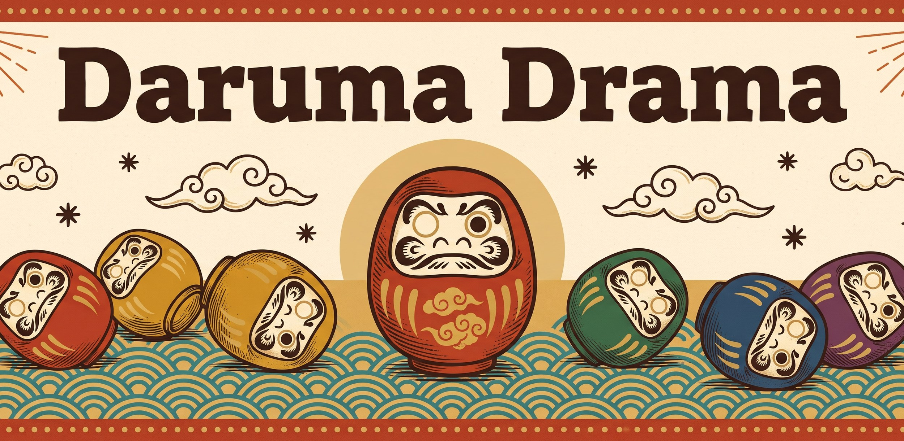
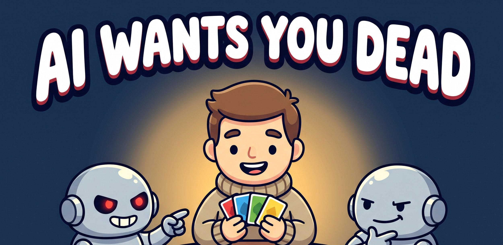
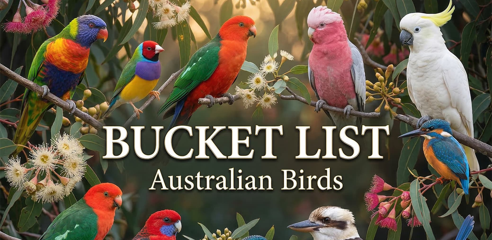

Small boxes, big decisions. These are my card games: quick to teach, easy to carry, and made to come back to the table again and again. Most are trick-takers, from games that retell a famous story to fresh twists on the classic form, and alongside them sit family games and a party game for a whole room. Click any game to find out more, and play the trick-takers online in your browser right now.
Trick-takers that retell a story. Each takes a famous novel or poem and turns its plot into the rules: Ahab hauls the whale back and forth across the sea, the swagman plays his stolen sheep before the troopers arrive, and the riders of Snowy River find everything turned upside down at the summit.

A two-player trick-taking tug-of-war at sea. Lead and win, the whale goes forward. Lead and lose, it goes backwards.
Play Online in Your Browser→
A trick-taker where the trumps are stolen sheep. Win a trick to grab a jumbuck into your hand, and play it before the troopers come.
Play Online in Your Browser→
A trick-taker that turns upside down at the summit. High wins the climb, low wins the descent, and at the top you chase the mob or watch.
Play Online in Your Browser→Fresh twists on the classic trick-taker. No story to follow, just one new rule that changes how every hand plays. In Daruma Drama, the cards you lose fall over in front of you and come back as your own private trump.

A trick-taker where every card you lose with lies knocked over in front of you. Your oldest fallen card is your own trump; win a trick to stand back up.
Play Online in Your Browser→Quick, light games for the whole family. Taught in a minute, over in twenty minutes or less, and made for everyone at the table.

A comedy card game played with your hand held backwards. Everyone can see whether you're human, except you. Say "I'm not a robot!" and hope there's no Rogue AI in your code.

Bucket List is a card drafting game about collecting the places you've visited, the creatures you've spotted, and the wonders you've seen. Every card has a checkbox - tick it off if you've really been there or spotted it in the wild, and watch your personal bucket list grow with every game you play.
Play Online in Your Browser→Games for a whole room. Icebreaker takes anywhere from 9 to 57 players and turns a room full of strangers into people who know each other's names.